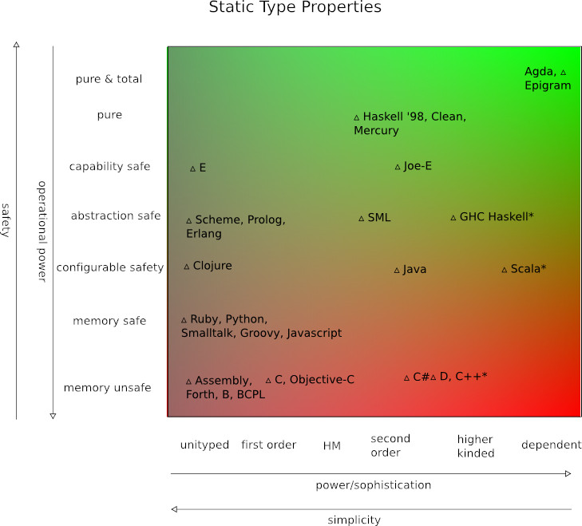

Programming languages
The choice of the programming language
While programming, the programmer choses the language on which he writes his code. Depending on the goal of the program, the language may vary. Some languages have a propensity for getting bugs than others. Every language comes whith its pros and cons, and is up to the programmer choosing the most suited for his software project. Thus said, the programmer needs to check the coding conventions of that particular programming language. Doing so, the programmer can avoid many syntax errors. There is an article by James Iry, in wich he explains how different are the programming languages in terms of complexity and safety. Here below there is the scheme presented by him:
